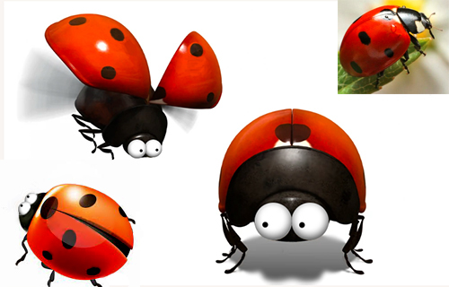

Modeling Requirements
For the most part, these characters will be presented in a God's-eye view, but
these models will also be used for close-ups of the cards and CG video. Btw, To
ensure better picture quality, we will render each action as a sequence of
frames separately.
Please make the lines as round and full as possible and avoid angles. The left
and right parts should be perfectly symmetrical. keep the light source in the
same position from character to character, with the light source from the top
down, bottom with a natural shadow. This ensures that the light source remains
constant when the character is flipped from side to side.
These model needs to ensure that we can successfully perform the common actions
in the reference video, and we will create actions for the characters to Moving,
Flying, Fighting, Skill, Resting, Injured, Dying in the game. please take care of the details
and we need you to use your imagination.Please do your best. we want to make a beautiful work and include your name in
the list of game productions.
01.Ant
「This is one of the main character of the game」
1.Please modeling the character according to the above pictures, it meets about
98% of the needs.
2.The eyes are round and two eyes are close together, no mouth, six legs.
trying to keep it cute.
3.Neck come in multiple colors to differentiate between players.
Animation Reference:
https://www.youtube.com/watch?v=4RlJhYxtNco
https://www.youtube.com/watch?v=De1FGoSrdsg
02.Ladybug
「This is one of the main character of the game」

1. The above picture is for reference only, it meets about 90% of the needs.
2. Please note that each dot on the back
of the ladybug should be a standard circle, not an irregular circle.(The
reference picture is irregular circle)
3.The structure of the six legs does not
need to be too complicated, it can be slightly simpler than the reference
picture.
4.Back come in multiple colors to differentiate between players.
Animation Reference:
https://www.youtube.com/watch?v=OBg8TFQddqc
https://www.youtube.com/watch?v=-uwZIdcflDE